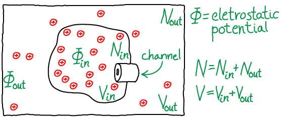
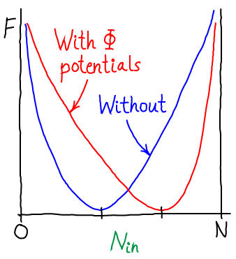

Although the simplest way to study the physics of free energy storage in such a gradient is by considering ideal particles all with zero potential energy, the reality of the cell is that electrostatic interactions are critical. Fortunately, the most important non-ideal effects of charge-charge interactions can be understood in terms of the usual ideal particles (which do not interact with one another) that do, however, feel the effects of a "background" electrostatic field. Such a mean-field picture is a simple approximation to the electrostatic effects induced primarily by having an excess of one or more charged species on a given side of a membrane - for example, the excess of $\plus{Na}$ ions in the extracellular environment.

To be precise, the model consists of $N$ particles that do not interact with one another, but which interact with the external potential $\Phi$ as if each had a charge of $q$, leading to potential energy $q \cdot \Phi_{\mathrm{X}}$ for each particle, where X = "in" or "out". The total volume $V$ is divided into inside and outside so that $\inn{V} + \out{V} = V$, with $\inn{N} + \out{N} = N$ ions populating the two compartments. The whole system is maintained at constant temperature $T$. Particles can pass through the channel shown in the figure, but we assume it is closed so that $\inn{V}$ and $\out{V}$ are constants: as shown in our discussion of two membrane-separated ideal gases, the assumption is a convenience and not an approximation because the total system volume $V$ and particle-number $N$ are truly constant.
Substituting for $\fidl$ and noting that $\out{N} = N - \inn{N}$, we have \begin{align} F (\inn{N}, N - \inn{N}) = & \inn{N} \, k_B T \ln \frac{\inn{N} \, \lambda^3}{\inn{V}} \nonumber \\ & + \, (N - \inn{N}) \, k_B T \ln \frac{(N - \inn{N}) \, \lambda^3}{\out{V}} \nonumber \\ & + \, \inn{N} \, q \, \inn{\Phi} + (N - \inn{N}) \, q \, \out{\Phi} . \end{align} Because it is really the difference in electrostatic potential which governs the ionic behavior, we define $\dphi = \inn{\Phi} - \out{\Phi}$. In terms of this quantity, we can rewrite the total free energy as \begin{align} F (\inn{N}, N - \inn{N}) = & \inn{N} \, k_B T \ln \frac{\inn{N} \, \lambda^3}{\inn{V}} \nonumber \\ & + \, (N - \inn{N}) \, k_B T \ln \frac{(N - \inn{N}) \, \lambda^3}{\out{V}} \nonumber \\ & + \, N q \, \out{\Phi} + \inn{N} q \, \dphi , \label{fcombo} \end{align}
Eq. \eqref{fcombo} is the free energy as a function of the number of particles inside the membrane (in volume $\inn{V}$). Inclusion of the electrostatic effects shifts the location of the most probable state, or free energy minimum.
The most probable $\inn{N}$ value therefore can be found by determining the minimum of $F$. This will represent the equilibrium point in the thermodynamic limit (very large $N$ - when fluctuations about the most probable $\inn{N}$ will be very small compared to $\inn{N}$ itself). We set $\dee F / \dee \inn{N} = 0$ in Eq. \eqref{fcombo}, then re-arrange and cancel terms to find
\begin{equation} \label{derivzero} 0 = k_B T \ln \frac{\inn{N} \, \lambda^3}{\inn{V}} - k_B T \ln \frac{\out{N} \, \lambda^3}{\out{V}} + \left. q \dphi \right/ k_B T \end{equation} Combining the terms using the rules of logarithms, followed by exponentiation, we find the Nernst equation, \begin{equation} \label{nernst} \mbox{Equilibrium: } \frac{ \inn{N} / \inn{V} }{ \out{N} / \out{V} } = e^{-q \, \dphi / k_B T} \end{equation} where you should recognize the left-hand side as the ratio of concentrations.In words, Eq. \eqref{nernst} shows that the concentrations inside and outside vary according to the Boltzmann factor of the ionic charge times the potential difference. Such an equilibrium is called a Donnan equilibrium. It should be comforting that when $\dphi = 0$, we recover equal concentrations.
In contrast to the uncharged system, we can see that the transport rates through the channel cannot be equal in the two directions. Let $k_{io}$ be the inside-to-outside rate constant and $k_{oi}$ be the reverse rate constant. Starting from detailed balance, which says that the overall flows must be equal and opposite, and substituting the Nernst relation \eqref{nernst}, we find that \begin{equation} \label{balNernst} \frac{ k_{oi} }{ k_{io} } = \frac{ \inn{N} / \inn{V} }{ \out{N} / \out{V} } = e^{-q \, \dphi / k_B T} \end{equation}
In other words, the ratio of rates for an ion channel depends on the potential difference. By itself, this does not contradict the mass action viewpoint (that rate constants are independent of concentrations) ... so long as $\dphi$ is truly constant. But if, more generally, $\dphi$ depends on the relative concentrations of the ion species moving through the channel, then the mass-action picture breaks down. Such a breakdown would occur, for example, if there were two species of ions, one of which could not permeate the membrane and hence was maintained at fixed inside and outside concentrations: in this case, flow of the permeable ion would change $\dphi$ and, in turn, change the rate "constants".The brief overview of trans-membrane ion physiology may help to clarify the bigger picture of ion/membrane behavior.